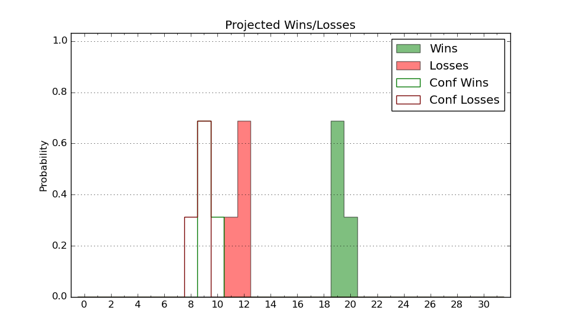

| Home | Game Probabilities | Conferences | Preseason Predictions | Odds Charts | NCAA Tournament |
| City: | Gainesville, Florida | |
| Conference: | SEC (6th)
| |
| Record: | 9-8 (Conf) 19-11 (Overall) | |
| Ratings: | Comp.: 15.9 (44th) Net: 15.9 (44th) Off: 112.1 (37th) Def: 96.2 (64th) SoR: 46.6 (57th) |
| Remaining | ||||||
|---|---|---|---|---|---|---|
| Date | Opponent | Win Prob | Pred. | |||
| 3/5 | Kentucky (5) | 31.4% | L 69-74 | |||
| Previous | Game Score | |||||
| Date | Opponent | Win Prob | Result | Off | Def | Net |
| 11/9 | Elon (256) | 95.3% | W 74-61 | -8.4 | -4.2 | -12.6 |
| 11/14 | Florida St. (100) | 79.7% | W 71-55 | -6.8 | 13.6 | 6.8 |
| 11/18 | Milwaukee (336) | 98.2% | W 81-45 | -5.9 | 16.3 | 10.4 |
| 11/22 | (N) California (134) | 77.9% | W 80-60 | 9.9 | 7.9 | 17.8 |
| 11/24 | (N) Ohio St. (19) | 37.4% | W 71-68 | -5.1 | 10.6 | 5.6 |
| 11/28 | Troy (183) | 91.0% | W 84-45 | 4.4 | 24.5 | 29.0 |
| 12/1 | @Oklahoma (39) | 33.2% | L 67-74 | -5.8 | -0.6 | -6.4 |
| 12/6 | Texas Southern (191) | 91.4% | L 54-69 | -28.0 | -14.2 | -42.2 |
| 12/8 | North Florida (264) | 95.6% | W 85-55 | -6.1 | 15.8 | 9.8 |
| 12/12 | (N) Maryland (84) | 63.0% | L 68-70 | 1.0 | -7.1 | -6.1 |
| 12/18 | (N) South Florida (243) | 90.3% | W 66-55 | -4.6 | -0.3 | -4.9 |
| 12/22 | Stony Brook (245) | 94.7% | W 87-62 | 1.5 | 3.6 | 5.1 |
| 1/5 | Alabama (21) | 54.0% | L 70-83 | -9.0 | -6.4 | -15.3 |
| 1/8 | @Auburn (13) | 16.7% | L 73-85 | 6.7 | -5.1 | 1.7 |
| 1/12 | LSU (17) | 46.5% | L 58-64 | -6.9 | 0.8 | -6.1 |
| 1/15 | @South Carolina (101) | 53.7% | W 71-63 | 12.9 | 2.4 | 15.3 |
| 1/19 | Mississippi St. (52) | 67.0% | W 80-72 | 15.9 | -9.8 | 6.1 |
| 1/22 | Vanderbilt (75) | 73.4% | W 61-42 | -1.6 | 23.4 | 21.9 |
| 1/24 | @Mississippi (104) | 54.9% | L 54-70 | -17.9 | -12.3 | -30.2 |
| 1/26 | @Tennessee (11) | 15.5% | L 71-78 | 8.8 | -3.3 | 5.5 |
| 1/29 | Oklahoma St. (50) | 66.5% | W 81-72 | 22.1 | -14.6 | 7.4 |
| 2/2 | @Missouri (165) | 71.7% | W 66-65 | -1.9 | -9.3 | -11.2 |
| 2/5 | Mississippi (104) | 80.6% | W 62-57 | -13.3 | 10.7 | -2.6 |
| 2/9 | Georgia (189) | 91.3% | W 72-63 | -11.9 | 1.9 | -10.0 |
| 2/12 | @Kentucky (5) | 11.8% | L 57-78 | -0.7 | -16.3 | -17.1 |
| 2/15 | @Texas A&M (65) | 41.7% | L 55-56 | -10.6 | 11.7 | 1.0 |
| 2/19 | Auburn (13) | 40.6% | W 63-62 | -2.4 | 8.5 | 6.1 |
| 2/22 | Arkansas (23) | 56.9% | L 74-82 | 7.0 | -23.8 | -16.9 |
| 2/26 | @Georgia (189) | 75.5% | W 84-72 | 19.4 | -12.6 | 6.8 |
| 3/1 | @Vanderbilt (75) | 44.8% | W 82-78 | 21.0 | -15.6 | 5.4 |
| Stats & Trends | |||||
|---|---|---|---|---|---|
| Current | Day | Week | Month | Season | |
| Composite | 15.9 | +0.2 | +0.6 | -2.3 | -9.8 |
| Comp Rank | 44 | +1 | +6 | -14 | -32 |
| Net Efficiency | 15.9 | +0.2 | +0.6 | -2.0 | -- |
| Net Rank | 44 | +1 | +6 | -11 | -- |
| Off Efficiency | 112.1 | +0.7 | +1.7 | +0.3 | -- |
| Off Rank | 37 | +7 | +21 | +3 | -- |
| Def Efficiency | 96.2 | -0.5 | -1.1 | -2.3 | -- |
| Def Rank | 64 | -4 | -12 | -20 | -- |
| SoS Rank | 52 | +6 | -1 | -7 | -- |
| Exp. Wins | 19.3 | +0.6 | +0.8 | +0.3 | -3.6 |
| Exp. Conf Wins | 9.3 | +0.6 | +0.8 | +0.3 | -3.2 |
| Conf Champ Prob | 0.0 | -- | -- | -0.0 | -30.0 |

| Advanced Stats | ||
|---|---|---|
| Stat | Value | Rank |
| Off Eff FG % | 0.530 | 73 |
| Off Ast Ratio | 0.150 | 119 |
| Off ORB% | 0.335 | 39 |
| Off TO Rate | 0.147 | 64 |
| Off FT Ratio | 0.351 | 56 |
| Def Eff FG % | 0.479 | 99 |
| Def Ast Ratio | 0.126 | 64 |
| Def ORB% | 0.295 | 234 |
| Def TO Rate | 0.199 | 23 |
| Def FT Ratio | 0.272 | 106 |